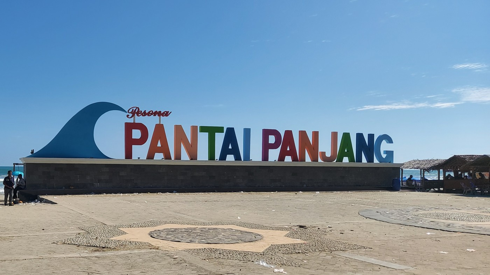
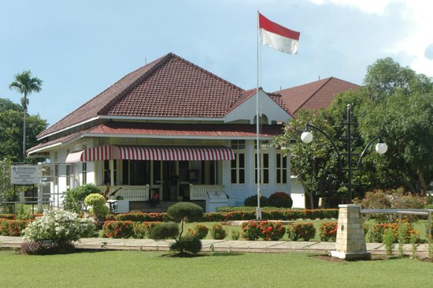
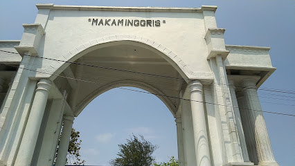

Provinsi bengkulu Bengkulu memiliki banyak sesekali dertinasi wisata, Mulai dari destinasi wisata alam, budaya dan sejarah, wisata religi, serta masih banyak lagi..
Wisata Alam
Provinsi Bengkulu memiliki berbagai destinasi wisata alam yang menakjubkan:
-
Pantai Panjang
Pantai ini memiliki garis pantai sepanjang 7 km dengan pasir putih yang lembut dan ombak yang tenang. Sangat cocok untuk bersantai, jogging, atau menikmati matahari terbenam.
-
Danau Tes

Terletak di Kabupaten Lebong, Danau Tes adalah danau terbesar di Bengkulu yang dikelilingi oleh pegunungan hijau. Tempat ini menawarkan suasana tenang dan pemandangan indah.
-
Gunung Kaba

Salah satu gunung aktif yang menawarkan jalur pendakian menantang serta pemandangan kawah vulkanik yang luar biasa.
Wisata Budaya dan Sejarah
-
Benteng Marlborough

Dibangun oleh Inggris pada abad ke-18, benteng ini menjadi salah satu bukti sejarah kolonial di Bengkulu. Pengunjung dapat belajar sejarah sembari menikmati arsitektur megahnya.
-
Rumah Pengasingan Bung Karno
Rumah ini menjadi saksi perjuangan Bung Karno selama masa pengasingan di Bengkulu. Koleksi artefak bersejarah dapat dilihat di sini.
-
Makam Inggris
Kawasan pemakaman yang menyimpan sejarah kolonial Inggris, terletak dekat dengan Benteng Marlborough.
Wisata Religi
-
Masjid Jamik Bengkulu

Dirancang oleh Bung Karno, masjid ini memiliki nilai sejarah dan arsitektur yang unik. Terletak di pusat Kota Bengkulu.
Dan masih banyak lagi tempat wisata yang ada di bengkulu untuk lebih lengkap silahkan kunjungi berikut jelajahi